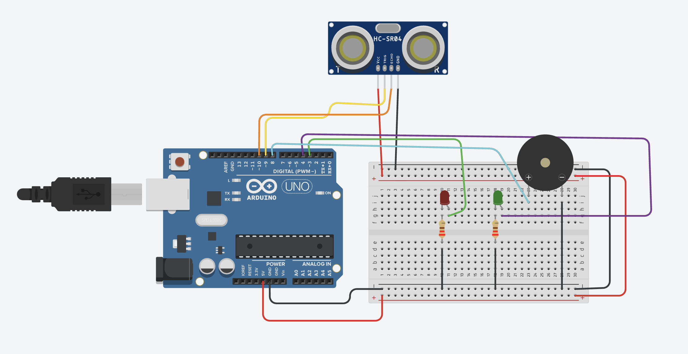

Código de colores de resistencia
- Violeta = 7
- Gris = 8
- Blanco = 9
Esto les permitirá identificar el valor real de la resistencia utilizada.
8. Conexión del circuito
Sensor ultrasónico
- VCC → 5V
- GND → GND
- TRIG → pin 9
- ECHO → pin 10
Función de cada conexión:
- VCC → 5V: Alimenta el sensor ultrasónico con energía.
- GND → GND: Cierra el circuito y establece la referencia de tierra.
- TRIG → pin 9: Pin de salida del Arduino que envía el pulso para iniciar la medición.
- ECHO → pin 10: Pin de entrada del Arduino que recibe el tiempo de rebote del ultrasonido.
LEDs
- LED rojo → pin 3
- LED verde → pin 4
Cada LED debe llevar una resistencia previamente calculada.
Buzzer
- Positivo → pin 8
- Negativo → GND
9. Desarrollo del código por bloques
Bloque 1 - Definición de pines
const int TRIG = 9;
const int ECHO = 10;
const int LED_ROJO = 3;
const int LED_VERDE = 4;
const int BUZZER = 8;
const int DISTANCIA_ALERTA = 30;Bloque 2 - Configuración inicial
void setup() {
pinMode(TRIG, OUTPUT);
pinMode(ECHO, INPUT);
pinMode(LED_ROJO, OUTPUT);
pinMode(LED_VERDE, OUTPUT);
pinMode(BUZZER, OUTPUT);
Serial.begin(9600);
}Bloque 3 - Medición de distancia
long medirDistancia() {
digitalWrite(TRIG, LOW);
delayMicroseconds(2);
digitalWrite(TRIG, HIGH);
delayMicroseconds(10);
digitalWrite(TRIG, LOW);
long duracion = pulseIn(ECHO, HIGH, 30000);
if (duracion == 0) return -1;
long distancia = duracion / 58;
return distancia;
}Bloque 4 - Lectura de distancia
void loop() {
long distancia = medirDistancia();
Serial.print("Distancia: ");
Serial.print(distancia);
Serial.println(" cm");Bloque 5 - Sistema de alerta
if (distancia > 0 && distancia <= DISTANCIA_ALERTA) {
digitalWrite(LED_ROJO, HIGH);
digitalWrite(LED_VERDE, LOW);
tone(BUZZER, 1000);
} else {
digitalWrite(LED_ROJO, LOW);
digitalWrite(LED_VERDE, HIGH);
noTone(BUZZER);
}
delay(200);
}10. Evidencias del proyecto
- Circuito funcionando
- Simulación en Tinkercad
- Código del radar
- Fotografías del montaje
- Practicario resuelto
11. Reto extra (desafío)
- Modificar el programa para que el buzzer suene más rápido mientras el objeto esté más cerca.
- Hacer que el LED cambie de comportamiento dependiendo de la distancia.
Diagrama de referencia (Tinkercad)

Código completo
// ===== RADAR SIMPLE CON ALERTA =====
// LED verde = normal
// LED rojo + buzzer = objeto detectado
// -------- Pines --------
const int TRIG = 9;
const int ECHO = 10;
const int LED_ROJO = 3;
const int LED_VERDE = 4;
const int BUZZER = 8;
// Distancia de alerta (ajústala)
const int DISTANCIA_ALERTA = 30; // centímetros
// -------- Función para medir distancia --------
long medirDistancia() {
digitalWrite(TRIG, LOW);
delayMicroseconds(2);
digitalWrite(TRIG, HIGH);
delayMicroseconds(10);
digitalWrite(TRIG, LOW);
long duracion = pulseIn(ECHO, HIGH, 30000);
if (duracion == 0) return -1;
long distancia = duracion / 58;
return distancia;
}
void setup() {
pinMode(TRIG, OUTPUT);
pinMode(ECHO, INPUT);
pinMode(LED_ROJO, OUTPUT);
pinMode(LED_VERDE, OUTPUT);
pinMode(BUZZER, OUTPUT);
Serial.begin(9600);
}
void loop() {
long distancia = medirDistancia();
Serial.print("Distancia: ");
Serial.print(distancia);
Serial.println(" cm");
if (distancia > 0 && distancia <= DISTANCIA_ALERTA) {
// ALERTA
digitalWrite(LED_ROJO, HIGH);
digitalWrite(LED_VERDE, LOW);
tone(BUZZER, 1000); // sonido
} else {
// NORMAL
digitalWrite(LED_ROJO, LOW);
digitalWrite(LED_VERDE, HIGH);
noTone(BUZZER);
}
delay(200);
}